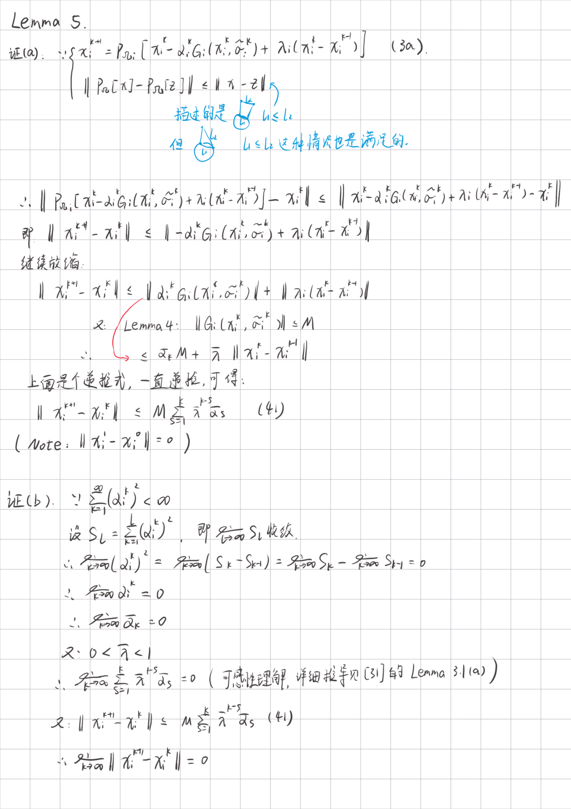
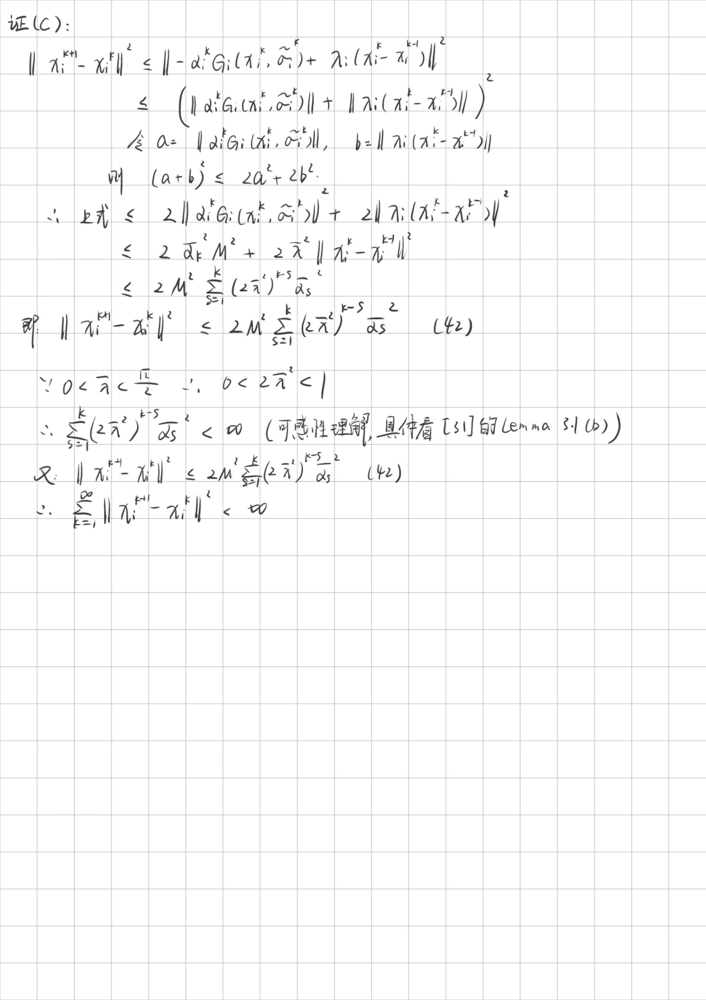
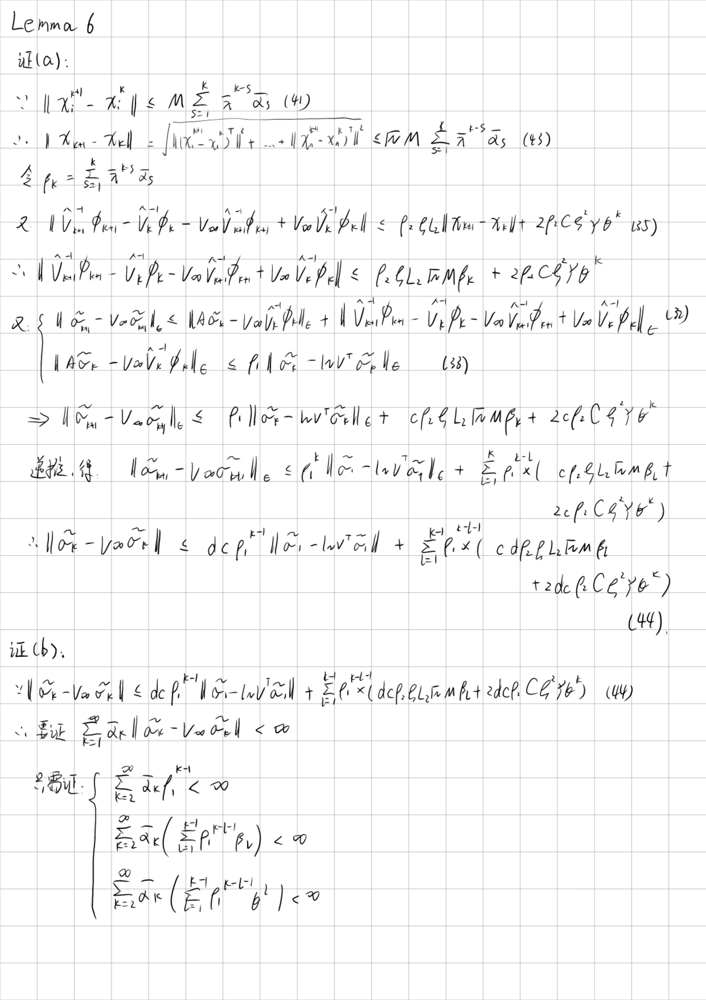
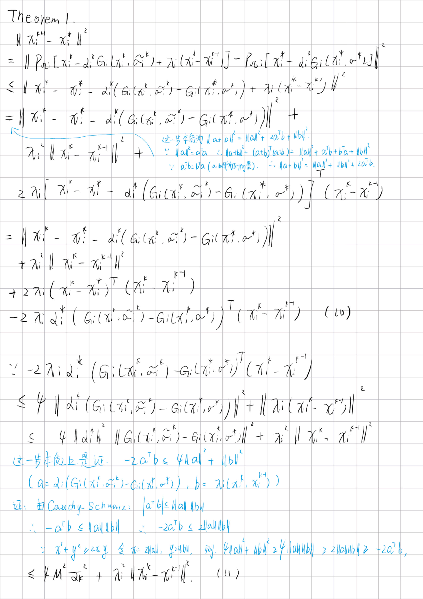
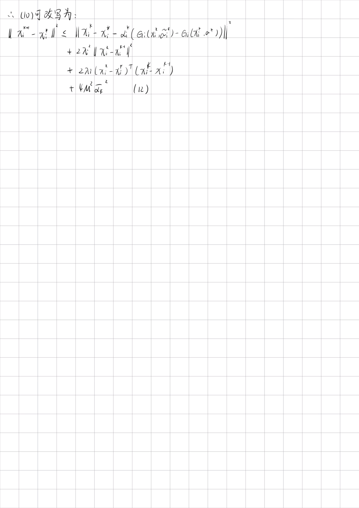
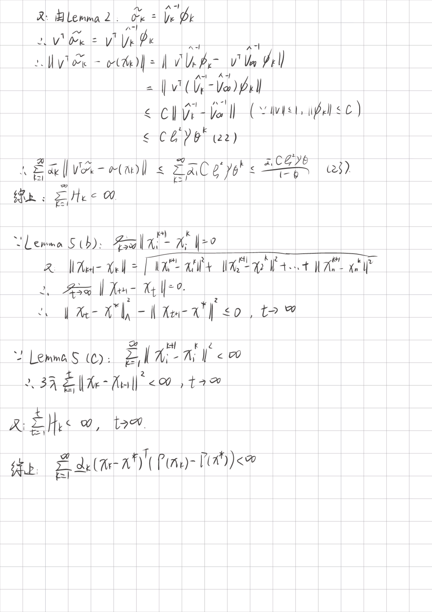
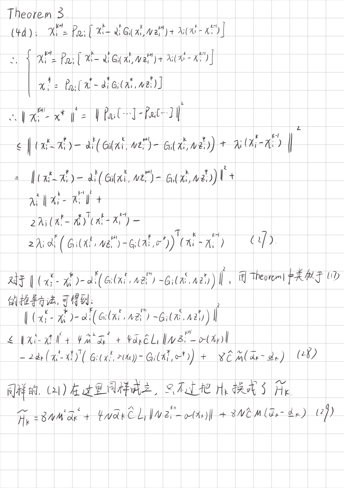
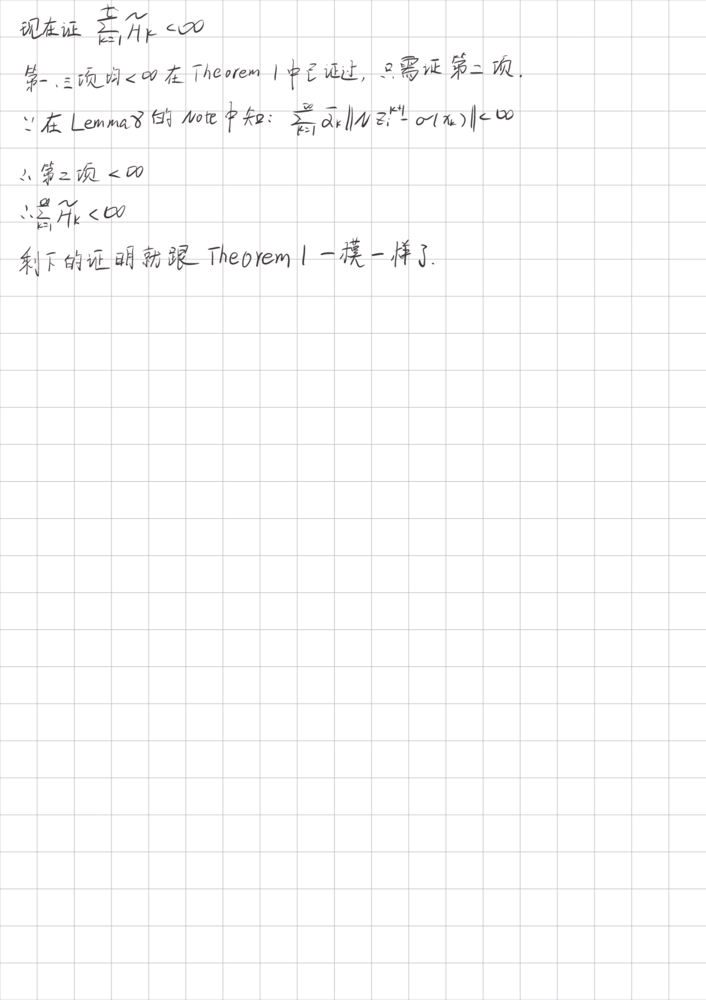

标题全称为：Distributed Nash Equilibrium Seeking for Aggregative Games With Directed Communication Graphs
中文翻译为：在使用有向图结构的聚合博弈中寻找离散式纳什均衡
Abstract
在聚合博弈中寻找分布式纳什均衡的关键点就是聚合博弈采取什么样的图结构。
若采取无向图或者权衡平衡图结构，则这个问题已经被前人解决。
如果采取有向图，则这仍然是个无人解决的问题。
本文解决的是当图结构采取“固定有向图”或者“时变有向图”时的分布式NE寻找问题。
使用了两种算法来分别解决上面所提到的两种图结构时的分布式NE寻找问题。
创新点是受凸优化中重球法的启发，向玩家策略的更新规范中引入了“动量项”，使得加速了算法寻找NE的收敛速度。
对于强连通固定图和b强连通时变图，从理论上证明，如果代价函数和参与人的集合满足一定条件，在步长减小的情况下，参与人的行动将收敛到集合博弈的NE上。
本文最后将该算法运用于插电式混合动力汽车的能耗控制，检验了算法的正确性。
Section 1: Introduction
1-1: 研究背景
本文研究的是聚合游戏，也就是每个玩家的花费除了依赖自身动作还依赖所有玩家的聚合行为。在聚合游戏中寻找NE是个有挑战性的问题，因为每个玩家只能与自己的邻居通信。
在分布式通信计算领域，一些解决聚合游戏中NE寻找问题的分布式算法已经被提出。具体分为“分布式离散时间算法”[6], [7]和“分布式连续时间算法”[8]-[15]
[6]：在这篇文章中，作者专注于研究有向图中的两种特殊的聚合游戏，分别叫做“network aggregative games” 和 "average aggregative games"。使用"optimal response strategy"方法去研究的。而且，在图的加权邻接矩阵为双随机矩阵的条件下，\(\varepsilon-NE\)在average aggregative games的寻找得以被解决。
[7]：在这篇文章中，作者专注于研究无向图中的聚合游戏。并相应提出了几种分布式同步和异步算法。
[8]：在这篇文章中，作者专注于研究权重平衡有向图中的聚合游戏，其中玩家的dynamics were described by disturbed first-order systems. 为了寻找寻找外部干扰下具有coupled equality constraint的聚合游戏的NE，作者在文中提出了一种利用内部模型排斥外部干扰来找NE的分布式算法。同时利用dynamic average consensus来估计所有玩家的总和。
[9]：在这篇文章中，研究了玩家成本函数非光滑，同时玩家动作受到局部可行性约束和线性耦合约束时的情况。具体来说，作者利用微分包含和微分投影算子，提出了一种基于连续时间分布投影的算法来找权重平衡有向图上的非光滑聚合游戏的NE。
[10]：在这篇文章中，作者研究了无向连通图上具有耦合约束的聚合游戏。
[11]：结合projected gradient dynamics 和 consensus tracking dynamics，本文讨论了无向连通图上的聚合游戏。
[12]：结合projected gradient dynamics 和 consensus tracking dynamics，本文讨论了权重平衡有向图上的聚合游戏。
[13]：研究了存在对通信链路持续攻击的网络上的聚合游戏。其中玩家的动态是受未知时变干扰和未建模项影响的双积分器。
[14]：研究了聚合游戏在智能电网能耗控制中的运用。其中玩家采用平均共识协议来估计总能耗，并且表明玩家的行为以指数形式收敛于NE。
[15]：将PHEVs建模成一个无向连通图上的聚合游戏，并对NE的稳定性进行了分析。
- 可以发现上面的文章大多都是在无向图或者权重平衡有向图上的工作。在一般有向图上利用分布式离散时间算法来寻找NE仍然是一个未解决的问题。因为难点就在于玩家之间的通信结构不平衡。
- 但是到目前为止，关于在不平衡有向图上的分布式优化问题已经被广泛研究。例如下面几篇文章：
[16]：提出了一种连续时间算法来解决权重不平衡图上的聚合游戏的NE寻找问题。
[17]：通过结合(子)梯度下降和推和共识协议开发了分布式(子)梯度推算法，其中双随机矩阵的要求可被推广到列随机矩阵。
[18]：为了不需要提前知道列-随机矩阵的出度，这篇文章仅使用行-随机矩阵，通过估计行-随机矩阵的左Perron特征向量来求解具有不平衡有向图的分布无约束优化问题。
[19], [20]：通过估计行随机矩阵的左Perron特征向量，研究有向图的分布式约束优化问题。
- 所以本文受到上述文章中处理不平衡有向图的方法启发，分别运用行随机矩阵（algorithm 1）和列随机矩阵（algorithm 2）来研究不平衡有向图上（两种算法分别对应fixed digraph和time-varying digraph）的聚合游戏。
- 具体来说，通过估计与拓扑相关的行随机矩阵的左特征向量，成功消除了这种拓扑相关行随机矩阵对所有玩家聚合行为估计的不平衡影响。此外，针对时变有向图下的聚集博弈，提出了一种基于推和协议的分布式算法来寻找NE。而且由于玩家的动作受到设定的约束，因此采用投影梯度法根据聚集的局部估计更新玩家的动作。
- 另一方面，考虑到步长恒定的投影梯度法只能在存在集合约束的情况下使玩家的动作收敛到NE的一个邻域，所以本文采用步长递减的方法来保证收敛到准确的NE，并且允许参与者采用不协调的步长。
- 然而，步长递减也带来了另一个挑战，即收敛速度慢。受到[21]中重球法的启发下，本文在玩家行为更新规律中引入动量项，以加快算法的收敛速度。证明了所提出的步长递减离散NE搜索算法能够保证收敛到精确NE。
- 此外，还分析了在步长递减时所提出的NE搜索算法的收敛速度。最后，将所提出的算法应用于有向图上的插电式混合动力汽车系统能耗博弈的求解，数值结果表明，动量项加速了算法的收敛速度。
看了上面的introduction，个人感觉其实就是说：
不平衡有向图上的聚合问题没人解决，因为玩家之间通信结构不平衡。
然后本文用[18] ~ [20]“估计行随机矩阵左特征向量”的方法解决上面这个难点。
另外，本文还讨论了时变有向图下的聚集博弈，用的是[17]的方法，但是在他基础上把步长固定改为步长递减从而使NE收敛更精确。另外还加了一个[21]里的重球法中的动量项来加快收敛速度。
1-2: 大致目录 & 基础公式
Section 2：图论的基础结论、问题建模、算法引入
Section 3、4：算法的收敛性证明
Section 5：验证算法在插电式混合动力汽车能耗控制的正确性
- \(\mathbb{R, N_+}\)：分别是实数集和正整数集
- \(e_i ∈ \mathbb{R^n}\) ：n维列向量，其中第i项为1，其余项为0
- \(1_n ∈ \mathbb{R^n}\) ：n维列向量，每一项都是1
- \(I_n\)：n维单位矩阵
- \(\|\cdot\|\)：欧几里得范式
- \(\|x\|_H, H \in \mathbb{R^{n \times n}}\)：加权范数（weighed norm）（结果为一个常数），定义为：\(\|x\|_H = \sqrt{x^THx}\)
- \(\Omega \in \mathbb{R^n}\)：n维的非空闭凸集，里面每个元素都是n维列向量
- \(P_{\Omega}[x]\): x(\(\Omega\)外一点)在\(\Omega\)上的投影点(结果为一个n维列向量),
定义为: \(P_{\Omega}[x] = argmin_{y \in
\Omega}\|x - y\| = y^*, y^* \in \Omega\)
- 具有非扩张性，即：\(\|P_{\Omega}[x]-P_{\Omega}[z]\| \le \|x-z\|\)
- \([x]_i\)：x这个n维向量中的第i项
- \(H_{ij}\)：矩阵H的i行j列那个元素
Section 2: Preliminary knowledge
2-1: 图理论
\(\mathcal{N}=\{1, 2, ..., N\}\)：玩家集合
\(\varepsilon(k) \subseteq \{(i, j), i, j \in \mathcal{N}\}\)：时刻为k时的边集 \((i, j) \in \varepsilon(k)\) means that player i can receive information from player j at time j.
\(\mathcal{G}(k) = \{\mathcal{N}, \varepsilon(k)\}\)：时刻为k时的图
\(N^{in}_{i}(k) = \{i\} \cup \{j | (j, i) \in \varepsilon(k)\}\)：时刻为k时，点i的入点集合
\(N^{out}_{i}(k) = \{i\} \cup \{j | (i, j) \in \varepsilon(k)\}\)：时刻为k时，点i的出点集合
\(d_i^k=|N^{out}_{i}(k)|\)：时刻为k时，点i的出度
strongly connected fixed digraph：强连通有向图。即任意俩点可通
For the time-varying digraph \(\mathcal{G}(k), \{\mathcal{G}(k)\}\) is said to be B-strongly connected if there exists a \(B \in \mathbb{N_+}\) such that the union digraph \(\cup_{t=kB}^{(k+1)B}\mathcal{G}(t)\) is strongly connected for any \(k \in \mathbb{N_+}\) 换句话说，如果一定时间段内的所有时变图的并（边并起来，边权不相加）为强连通，则这些时变图的集合是B-连通的。
后面依次类推。
2-2: 问题建模
每个玩家的动作集合定义为\(\Omega_i\)，动作定义为\(x_i\)。每个玩家的花费函数定义为\(J_i(x), x = [x_1, x_2, ..., x_n]^T\)，通过这个表达式可以看出来，每个玩家的花费函数跟所有玩家的动作相关。
\(J_i(x)\)还有几种等价的定义：
定义1：\[J_i(x) = f_i(x_i, \sigma(x)), \\ \sigma(x)=\sum_{j=1}^{N}\phi_{j}(x_j) \qquad (1)\]
定义2：\(J_i(x)=J_i(x_i, x_{-i}), x_{-i}=[x_1, ..., x_{i-1}, x_{i+1}, ..., x_n]\)
要解决的问题是最小化每一个玩家的花费函数，即：
\(min \, f_i(x_i, \sigma(x)), \forall{i} \in \mathcal{N} \qquad (2)\)
实际上就是求一个纳什均衡问题，因为纳什均衡就是任何一个玩家改变它的动作都不能使得它的花费函数更小。如果纳什均衡的观点表达上面的式子，就是：
假如\(x^*\)是NE，当且仅当\(J_i(x_i^*, x_{-i}^*) \le J_i(x_i, x_{-i}^*), \forall{x_i} \in \Omega_i, \forall{i} \in \mathcal{N}\)
Note that the players in the considered game have no knowledge of the aggregation \(\sigma(x)\) due to the privacy of \(\phi_j(x_j), j \in \mathcal{N}\)。
也就是说，\(\phi_i(x_i)\)函数是每个人特有的，只有自己知道，别人不知道。但是可以通过有向图与邻居交换信息。
下面是论文的几个假设，论文解决的问题都是基于这几个假设作为前提的。
Assumption 1
- 论文讨论的图不是一般有向图，而是两类。分别是固定有向图（fixed digraph）和时变有向图（time-varying digraph）。
- 而且fixed digraph一定满足强连通，time-varying digraph一定满足B-强连通。
Assumption 2
对于所有玩家的动作集合\(\Omega_{i}\)，都是非空、紧致、凸的。
定义\(\Omega_{-i}=\Omega_{1} \times \Omega_{2} \times ... \times \Omega_{i-1} \times \Omega_{i+1} \times ... \times \Omega_{N}\)。More over, for given \(x_{-i} \in \Omega_{-i}, J_i(x_i, x_{-i})\) is convex about \(x_i\) on \(\Omega_{i}\)
\(J_i(x_i, x_{-i})\)对\(x\)连续可微，\(\phi_i(x_i)\)对\(x_i\)连续可微。
- 定义\(\nabla_z{f(z, y)}\)为对z求一阶偏导
- 按照此定义，将\(J_i(x_i, x_{-i})\)对\(x_i\)求导，将得到\(\nabla_{x_i}J_i(x_i, x_{-i}) =\nabla_{x_i}f_i(x_i, \sigma(x)) + \nabla_{\sigma}f_i(x_i, \sigma(x)) \, \nabla_{x_i}\phi_i(x_i)\)。这里实际上是有点歧义的，作者想表达的意思就是关注玩家i的动作对其花费函数的影响。
- 定义\(\Gamma(x)=[\nabla_{x_1}J_1(x_1, x_{-1}), ..., \nabla_{x_N}J_N(x_N, x_{-N})]^T\)，即每个玩家花费函数对自身动作求导组成的一个列向量
- 定义\(G_i(x_i, \tilde{\sigma_i}) = \nabla_{x_i}f_i(x_i, \sigma(x))|_{\sigma(x)=\tilde{\sigma_i}} + \nabla_{\sigma}f_i(x_i, \sigma(x)) \, \nabla_{x_i}\phi_i(x_i)|_{\sigma(x)=\tilde{\sigma_i}}\)。不是把每个花费函数对动作求导嘛，这里就是把求导结果里的\(\sigma(x)\)赋值为\(\tilde{\sigma_i}\)了。
Assumption 3
- \(\Gamma(x)\)满足下列俩条件之一：
- \(\Gamma(x)\)在\(\Omega\)上是严格单调的，也就是说，\((\Gamma(x)-\Gamma(x'))^T(x-x') > 0, \forall{x, x'} \in \Omega, x \ne x'\)
- \(\Gamma(x)\)在\(\Omega\)上是强单调的，也就是说，存在一个常数\(\mu > 0\)使得\((\Gamma(x)-\Gamma(x'))^T(x-x') \ge \mu\|x-x'\|^2, \forall{x, x'} \in \Omega, x \ne x'\)
Assumption 4
The mapping \(G_i(x_i, \sigma) is L_1-Lipschitz\) continuous with repect to \(\sigma \in \mathbb{R}\) and \(\phi_i(x_i)\) is \(L_2-Lipschitz\) continuous with repect to \(x_i \in \Omega_i\) for all \(i \in \mathcal{N}\), i.e.,
(\(L_1, L_2\) are two positive constants) \[ \begin{aligned}\|G_i(x_i,\sigma_1)-G_i(x_i,\sigma_2)\|_2&\le L_1\left\|\sigma_1-\sigma_2\right\|,&\forall\sigma_1,\sigma_2\in\mathbb{R},\\\|\phi_i(z_1)-\phi_i(z_2)\|&\le L_2\left\|z_1-z_2\right\|,&\forall z_1,z_2\in\Omega_i,\end{aligned} \]
2-3: 算法引入
Algorithm 1 NE Seeking With Row-Stochastic Adjacency Matrix
- Initialization: \(x_i^0=x_i^1 \in \Omega_i, v_i^1=e_i, \tilde\sigma_i^1=\phi_i(x_i^1)\)
- for \(k \in \mathbb{N}_+\) do
- for each player \(i \in
\mathcal{N}\) do
- \(x_i^{k+1}=P_{\Omega_i}[x_i^k - \alpha_i^kG_i(x_i^k, \tilde\sigma_i^k) + \lambda_i(x_i^k-x_i^{k-1})] \qquad (3a)\)
- \(v_i^{k+1}=\sum_{j=1}^Na_{ij}v_j^k \qquad (3b)\)
- \(\tilde{\sigma}_{i}^{k+1}=\sum_{j=1}^{N}a_{ij}\tilde{\sigma}_{j}^{k}+\frac{\phi_{i}\left(x_{i}^{k+1}\right)}{\left[v_{i}^{k+1}\right]_{i}}-\frac{\phi_{i}\left(x_{i}^{k}\right)}{\left[v_{i}^{k}\right]_{i}} \qquad (3c)\)
- end for
- for each player \(i \in
\mathcal{N}\) do
- end for
行随机邻接矩阵记为\(A=[a_{ij}]\)，其中\(a_{ii}>0\)，且若\((j, i) \in \varepsilon\)则\(a_{ij}>0\), 否则\(a_{ij}=0\)。另外，行随机矩阵的特征就是每一行元素和为1。
\(x_i^k\)表示第i个玩家在时刻k的动作
\(v_i^k \in \mathbb{R}^N\)用来estimate the left eigenvector \(v\) associated with eigenvalue \(1\) of the matrix A.
\(\tilde\sigma_i^k\) be the player i's estimate on the aggregation \(\sigma(x_k)\) at iteration \(k\), \(x_k=[x_1^k, ..., x_N^k]^T\)
\(\alpha_i^k\)表示步长，它遵循下面三个限制：
- 每个玩家在任意时刻的步长都是大于0的，且对于每个玩家，其\(\{\alpha_i^k\}\)单调不增加
- \(\sum_{k=1}^{\infty}\alpha_{i}^{k}=\infty,\sum_{k=1}^{\infty}(\alpha_{i}^{k})^{2}<\infty\)
- \(\sum\limits_{k=1}^{\infty}(\overline{\alpha}_{k}-\underline{\alpha}_{k})<\infty,\text{ where }\overline{\alpha}_{k}=\max\limits_{j\in\mathcal{N}}\{\alpha_{j}^{k}\}\text{ and }\underline{\alpha}_{k}=\min\limits_{j\in\mathcal{N}}\{\alpha_{j}^{k}\}.\)
在algorithm 1中，玩家使用非精确梯度\(G_i(x_i^k, \tilde\sigma_i^k)\)来更新自身动作。为了消除不精确梯度带来的误差，引入递减的步长而不是固定的步长，从而保证精确收敛到NE。另外，动量项\(\lambda_i(x_i^k-x_i^{k-1})]\)可以加速算法的收敛，\(0<\lambda_i<1\)是动量参数。以上就是对于(3a)的解释。
在(3c)中的第二项和第三项，其存在的目的是为了解决矩阵\(A\)可能不是列随机的问题。
可以看出，(3b)和(3c)都用到了\(a_{ij}\)，所以algorithm 1只适用于fixed digraph。
Algorithm 2 NE Seeking With Column-Stochastic Adjacency Matrix
这个算法是针对time-varying digraph的。在算法2中，每个玩家需要知道自己在每次交流中的出度，因为不同时刻每个点的出度会变化。
- Initialization: \(x_{i}^{0}=x_{i}^{1}\in\Omega_{i},y_{i}^{1}=1,\tilde{\sigma}_{i}^{1}=\phi_{i}(x_{i}^{1})\)
- for \(k \in \mathbb{N}_+\) do
- for each player \(i \in
\mathcal{N}\) do
- \(w_i^{k+1}=\sum_{j\in N_i^{in}(k)}\frac{\tilde{\sigma}_j^k}{d_j^k} \qquad (4a)\)
- \(y_i^{k+1}=\sum_{j\in N_i^{in}(k)}\frac{y_j^k}{d_j^k} \qquad (4b)\)
- \(z_i^{k+1}=\frac{w_i^{k+1}}{y_i^{k+1}} \qquad (4c)\)
- \(x_i^{k+1}=P_{\Omega_i}\left[x_i^k-\alpha_i^kG_i(x_i^k,Nz_i^{k+1})+\lambda_i(x_i^k-x_i^{k-1})\right] \qquad (4d)\)
- \(\tilde{\sigma}_i^{k+1}=w_i^{k+1}+\phi_i\left(x_i^{k+1}\right)-\phi_i\left(x_i^k\right) \qquad (4e)\)
- end for
- for each player \(i \in
\mathcal{N}\) do
- end for
可以发现，这里求\(x_i^{k+1}\)第二项\(G_i\)中并没用\(\tilde\sigma_i^k\)，而是用的\(Nz_i^{k+1}\)。z是w跟y的比值，w与y又与点的入点和(入点的出度)有关。
Note: 在algorithm 1中，若把"若\((j, i) \in \varepsilon\)则\(a_{ij}>0\)"改为“若\((j, i) \in \varepsilon\)则\(a_{ij}=\frac{1}{d_j^k}\)”，则(3c)与(4e)等价
Section 3: Convergence analysis of algorithm 1
3-1: Theorem 1
条件：
采用固定有向图结构
\(\nabla_{x_i}J_i(x_i, x_{-i}) =\nabla_{x_i}f_i(x_i, \sigma(x)) + \nabla_{\sigma}f_i(x_i, \sigma(x)) \, \nabla_{x_i}\phi_i(x_i)\)
\(\Gamma(x)=[\nabla_{x_1}J_1(x_1, x_{-1}), ..., \nabla_{x_N}J_N(x_N, x_{-N})]^T\)
\(G_i(x_i, \tilde{\sigma_i}) = \nabla_{x_i}f_i(x_i, \sigma(x))|_{\sigma(x)=\tilde{\sigma_i}} + \nabla_{\sigma}f_i(x_i, \sigma(x)) \, \nabla_{x_i}\phi_i(x_i)|_{\sigma(x)=\tilde{\sigma_i}}\)
\((\Gamma(x)-\Gamma(x'))^T(x-x') > 0, \forall{x, x'} \in \Omega, x \ne x'\)
\[ \begin{aligned}\|G_i(x_i,\sigma_1)-G_i(x_i,\sigma_2)\|_2&\le L_1\left\|\sigma_1-\sigma_2\right\|,&\forall\sigma_1,\sigma_2\in\mathbb{R},\\\|\phi_i(z_1)-\phi_i(z_2)\|&\le L_2\left\|z_1-z_2\right\|,&\forall z_1,z_2\in\Omega_i,\end{aligned} \]
对于\(\alpha\)步长，满足下面三条性质(C1-C3)
- \(\{\alpha_i^k\}\)不严格递减，且\(\alpha_i^k>0\)
- \(\sum_{k=1}^{\infty}\alpha_{i}^{k}=\infty,\sum_{k=1}^{\infty}(\alpha_{i}^{k})^{2}<\infty\)
- \(\sum\limits_{k=1}^{\infty}(\overline{\alpha}_{k}-\underline{\alpha}_{k})<\infty,\text{ where }\overline{\alpha}_{k}=\max\limits_{j\in\mathcal{N}}\{\alpha_{j}^{k}\}\text{ and }\underline{\alpha}_{k}=\min\limits_{j\in\mathcal{N}}\{\alpha_{j}^{k}\}.\)
\(\begin{matrix}0&<&\lambda_i&<&\frac{\sqrt{2}}{2}\end{matrix}\)
结论：all players' actions converge to the unique NE \(x^*\) under algorithm 1.
3-2: Preliminary analysis about algorithm 1
先来求一下algorithm 1里的\(v_i^k\)
定义：\(\left.V_{k}=\left[\begin{array}{ccc}{v_{1}^{k},v_{2}^{k},\ldots,v_{N}^{k}}\end{array}\right.\right]^{T}\)
所以\(v_i^{k+1}=\sum_{j=1}^Na_{ij}v_j^k \qquad (3b)\)等价于\(V_{k+1}=AV_{k}\qquad (5)\)
因为\(V_1 = [v_1, v_2, ..., v_N]^T = I_N\)，即\(v_i = e_i\)（条件）
所以\(\lim_{k\to\infty}V_k=\operatorname*{lim}_{k\to\infty}A^{k-1}V_1=\operatorname*{lim}_{k\to\infty}A^{k}\)
因为A是行随机矩阵，所以显然\(1_n\)是特征值为1时的一个特征向量。
所以得出\(\operatorname*{lim}_{k\to\infty}A^{k}=1_Nv^T\) （根据Perron-Frobenius定理）, where \(v\) 是A关于特征值1的左特征向量且\(v\)每一项大于0，且\(v^T1_N=1\)。
所以\(\lim_{k\to\infty}\left.V_{k}=\left[\begin{array}{ccc}{v_{1}^{k},v_{2}^{k},\ldots,v_{N}^{k}}\end{array}\right.\right]^{T} = 1_Nv^T\)。又\(1_Nv^T=[v, v, ..., v]^T\)。
也就是说，当k趋近于无穷大时，每个玩家的\(v_i\)都收敛于\(v\)。
再来求一下algorithm 1里的\(\tilde{\sigma}_{i}^{k}\)
首先\(V_k\)对角线上的元素都是正的，通过\(V_{k+1}=AV_{k}\)可看出。首先\(V_1\)是单位阵肯定对角线为正，然后A的对角线元素都是正的（这是algorithm 1引入时提到的条件）。所以他俩乘出来的对角线也是正的。不断递推，对角线上都是正的。
所以现在我定义一个\(\left.\hat{V}_k=\operatorname{diag}\left(\begin{bmatrix}v_1^k\end{bmatrix}\right._1,\begin{bmatrix}v_2^k\end{bmatrix}_2,\ldots,\begin{bmatrix}v_N^k\end{bmatrix}_N\right)\)
上面这个\(\hat{V}_k\)其实就是取了\(V_k\)的对角线，其余地方都是0。
因为前面说了对角线都是正的嘛，所以\(\hat{V_k}\)是满秩可逆的。而且我们知道最终\(V_k\)是收敛的，所以\(\hat{V_k}\)最终也是收敛的。
最后我再定义\(\tilde{\sigma}_{k}=\left[\tilde{\sigma}_{1}^{k},\tilde{\sigma}_{2}^{k},\ldots,\tilde{\sigma}_{N}^{k}\right]^{T}\)和\(\phi_k = \left[\phi_{1}(x_{1}^{k}),\phi_{2}(x_{2}^{k}),\ldots,\phi_{N}(x_{N}^{k})\right]^{T}\)
则\(\tilde{\sigma}_{i}^{k+1}=\sum_{j=1}^{N}a_{ij}\tilde{\sigma}_{j}^{k}+\frac{\phi_{i}\left(x_{i}^{k+1}\right)}{\left[v_{i}^{k+1}\right]_{i}}-\frac{\phi_{i}\left(x_{i}^{k}\right)}{\left[v_{i}^{k}\right]_{i}} \qquad (3c)\)可改写为：
\(\tilde{\sigma}_{k+1}=A\tilde{\sigma}_k+\hat{V}_{k+1}^{-1}\Phi_{k+1}-\hat{V}_k^{-1}\Phi_k \qquad (6)\)
3-3: Lemmas
为了接下来的叙述方便，定义\(V_{\infty}=\lim\limits_{k\to\infty}V_{k}=1_{N}v^{T}\)和\(\hat{V}_{\infty}=\operatorname{diag}([v]_1,\ldots,[v]_N)\)
Lemma 1
因为\(\hat{V}_{k}\)是收敛的，所以会有\(\|\hat{V}_{k}^{-1}\|\leq \varrho, \varrho > 0\)
矩阵的二范式从几何意义上来说就是单位圆在经过矩阵变换后离原点最远的距离。假设要求\(\|A\|\)，则先求\(A^TA\)，然后再求\(A^TA\)的特征值，取最大的特征值开方就是矩阵A的二范数
引理1：\(\|\hat{V}_{k}^{-1}-\hat{V}_{\infty}^{-1}\|\leq\varrho^{2}\gamma\theta^{k}, k \in \mathbb{N_+}, \gamma > 0, 0 < \theta < 1, \varrho > 0\)
证明：
因为\((\hat{V_k}^{-1})(\hat{V_k} - \hat{V}_\infty)(\hat{V}_\infty^{-1}) = (\hat{V}_{k}^{-1}-\hat{V}_{\infty}^{-1})\)
两边取范数，得：\(\|\hat{V}_{k}^{-1}-\hat{V}_{\infty}^{-1}\| = \|(\hat{V_k}^{-1})(\hat{V_k} - \hat{V}_\infty)(\hat{V}_\infty^{-1})\| \le \|\hat{V_k}^{-1}\|\|\hat{V_k} - \hat{V}_\infty\|\|\hat{V}_\infty^{-1}\|\)
定义\(\varrho = {sup}_{k}\left\|\widetilde{V}_{k}^{-1}\right\|_{2}\)，则\(\|\hat{V_k}^{-1}\|\|\hat{V}_\infty^{-1}\| \le \varrho^2\)
又\(\|\hat{V}_k - \hat{V}_\infty\| \le \gamma\theta^{k}\), [17]。
所以\(\|\hat{V}_{k}^{-1}-\hat{V}_{\infty}^{-1}\| \le \varrho^{2}\gamma\theta^{k}\)，得证。
Lemma 2
引理2：\(V_{\infty}\tilde{\sigma}_{k}=V_{\infty}\hat{V}_{k}^{-1}\Phi_{k}, k \in \mathbb{N_+}\)
证明如下：
Lemma 3
先来点前置知识
因为\(\operatorname*{lim}_{k\to\infty}\left(A-1_{N}v^{T}\right)^{k}=\operatorname*{lim}_{k\to\infty}A^{k}-1_{N}v^{T}=0\)（这个极限推导可以先放着不管），所以根据谱半径的知识，可以知道\(\rho(A-1_Nv^T)~<~1\)
又因为\(\rho(A-1_Nv^T) \le \|A - 1_Nv^T\|\)
所以必然存在一个矩阵范数\(\|\cdot\|_\epsilon\)，使得\(\rho(A-1_{N}v^{T})\leq\|A-1_{N}v^{T}\|_{\epsilon}\leq \rho(A-1_{N}v^{T})+\epsilon<1\)
另外，又因为所有的矩阵范式都是等价的，所以有：
\(\|\cdot\|_{\epsilon}\leq c\|\cdot\|\) and \(\|\cdot\|\leq d\|\cdot\|_{\epsilon}\)
接下来再定义两个东西
\(\rho_1=\left\|A-1_Nv^T\right\|_\epsilon, \rho_1 < 1 \qquad (7)\)
\(\rho_2=\left\|I_N-1_Nv^T\right\| \qquad (8)\)
引理3：Under Assumption 1(a), 2 and 4, \(\|\tilde{\sigma}_i^k-v^T\tilde{\sigma}_k\|\) is bounded, i.e., there exists a constant \(\hat{C} > 0\) such that \(\|\tilde{\sigma}_{i}^{k}-v^{T}\tilde{\sigma}_{k}\|\leq\hat{C}\)
证明如下：
Lemma 4
引理4：\(\|G_i\left(x_i^k,\sigma(x_k)\right)\|\le M, \|G_i(x_i^k, \tilde{\sigma}_i^k) \| \le M, M > 0\)
证明如下：
Lemma 5
定义\(\overline{\lambda}=\max_{j\in\mathcal{N}}\{\lambda_j\}\)，若\(0<\overline{\lambda}<\frac{\sqrt{2}}2\)，则下面三条性质将会满足：
\(\left\|x_{i}^{k+1}-x_{i}^{k}\right\|\leq M\sum_{s=1}^{k}\overline{\lambda}^{k-s}\overline{\alpha}_{s},\forall k\in\mathbb{N}_{+}\)
\(\lim\limits_{k\to\infty}\left\|x_{i}^{k+1}-x_{i}^{k}\right\|=0\)
\(\sum_{k=1}^{\infty}\|x_{i}^{k+1}-x_{i}^{k}\|^{2}<\infty\)
where \(M\) is given in Lemma 4, and \(\overline{\alpha}_{k}=\max_{j\in\mathcal{N}}\{\alpha_{j}^{k}\}\)
证明如下：


补充：因为所有动作\(x_i^k\)都属于compact的\(\Omega_i\)，所以\(\{x_k\}\)是有界的，又由Lemma 5(b)和柯西收敛准测可容易推出\(\{x_k\}\)是收敛的。
Lemma 6
For any \(k \geq 2\), one has \[\left\|\tilde{\sigma}_{k}-V_{\infty}\tilde{\sigma}_{k}\right\|\leq dc\rho_{1}^{k-1}\left\|\tilde{\sigma}_{1}-1_{N}v^{T}\tilde{\sigma}_{1}\right\| + D_1\sum_{l=1}^{k-1}\rho_1^{k-l-1}\beta_l+D_2\sum_{l=1}^{k-1}\rho_1^{k-l-1}\theta^l \qquad (9)\]where \(D_{1}=dc\rho_{2}\varrho L_{2}\sqrt{N}M,D_{2}=2dc\rho_{2}C\varrho^{2}\gamma, \beta_l=\sum_{s=1}^{l}\overline{\lambda}^{l-s}\overline{\alpha}_{s}\)and\(0<\theta<1\) is given in Lemma 1.
For step-size sequence \(\{\alpha_i^k\}\) satisfying conditions C1-C3, one has \(\sum_{k=1}^{\infty}\overline{\alpha}_{k}\left\|\tilde{\sigma}_{k}-V_{\infty}\tilde{\sigma}_{k}\right\|<\infty\)
证明如下：

3-4: Proof of theorem 1



3-5: Theorem 2
在满足Assumption 1(a), 2, 3(b) and 4的前提下。令\(\alpha_{i}^{k}=\frac{1}{\sqrt{k}}=\alpha_{k}\)。且\(0<\lambda_i<\frac{\sqrt{2}}{2}\)，则\(\{q_t\}\)收敛到0的速率为\(O(\frac{\ln t}{\sqrt{t}})\)。 \[ q_t=\frac{\sum\limits_{k=1}^t\alpha_k\|x_k-x^*\|^2}{\sum\limits_{k=1}^t\alpha_k} \] 证明：暂略
3-6: Convergence rate analysis of algorithm 1
如果\(\Gamma(x)\)是强单调，且步长满足\(\alpha_{i}^{k}=\frac{1}{\sqrt{k}}\)。则可以分析algorithm 1的收敛速率。
结论就是\(x_k\)收敛到\(x^*\)的速率与\(q_t\)收敛到0的速率相同。证明如下：
Section 4: Convergence analysis of algorithm 2
对于之前的algorithm 2中的公式(4a) - (4c)，用矩阵表示如下： \[ \begin{aligned} &w_{k+1} =A\left(k\right)\tilde{\sigma}_{k}, \\ &y_{k+1} =A\left(k\right)y_{k}, \\ &z_{i}^{k+1} =\frac{w_{i}^{k+1}}{y_{i}^{k+1}},\quad i=1,\ldots,N, & (24) \end{aligned} \] (4e)则可以表达为以下形式：
\(\tilde{\sigma}_{k+1}=A\left(k\right)\tilde{\sigma}_{k}+\Phi_{k+1}-\Phi_{k},\quad(25)\)
其中A矩阵是一个列随机矩阵，如果点j连向i，则A(i, j) = 1 / (点j的出度)。如果j不连向i，则A(i, j) = 0。
定义\(\epsilon_{k}=[\epsilon_{1}^{k},\ldots,\epsilon_{N}^{k}]^{T}=\Phi_{k+1}-\Phi_{k}\)，这个是。再定义\(\epsilon_{i}^{k}=\phi_{i}(x_{i}^{k+1})-\phi_{i}(x_{i}^{k})\)。
因为A是列随机矩阵，所以\(1_{N}^{T}A({k})=1_{N}^{T}\)。所以(25)左右同乘一个\(1_N^T\)，然后移项得到递推式，通过递推式可得\(1_{N}^{T}\tilde{\sigma}_{k} - 1_N^T\phi_k = 1_N^T\tilde{\sigma}_1 - 1_N^T\phi_1 = 0\)
所以\(1_N^T\tilde{\sigma}_k = 1_N^T\phi_k = \phi_1(x_1^k) + \phi_2(x_2^k) + ... + \phi_n(x_n^k) = \sigma(x_k)\)
4-1: Lemmas
Lemma 7
定理：在满足Assumptions 1(b), 2, 4的前提下，there exists a constant \(\tilde{M} > 0\), s.t, \(\|G_{i}(x_{i}^{k},\sigma(x_{k}))\|\leq\tilde{M}\) and \(\|G_{i}(x_{i}^{k},Nz_{i}^{k+1})\|\leq\tilde{M}\)
证明：
Lemma 4已经证出了\(\left\|G_i\left(x_i^k,\sigma(x_k)\right)\right\|\leq M_1\)，所以\(\|G_{i}(x_{i}^{k},\sigma(x_{k}))\|\leq\tilde{M}\)就不用证了。主要证后面那个。
\[\begin{Vmatrix}G_i(x_i^k,Nz_i^{k+1})\end{Vmatrix}\le\begin{Vmatrix}G_i(x_i^k,Nz_i^{k+1})-G_i(x_i^k,1_N^T\tilde{\sigma}_k)\end{Vmatrix}+\left\|G_{i}(x_{i}^{k},1_{N}^{T}\tilde{\sigma}_{k})\right\| \\ \qquad \le L_{1}\left\Vert Nz_{i}^{k+1}-1_{N}^{T}\tilde{\sigma}_{k}\right\Vert+\left\Vert G_{i}(x_{i}^{k},1_{N}^{T}\tilde{\sigma}_{k})\right\Vert \]
显然，\(\|G_{i}(x_{i}^{k},1_{N}^{T}\tilde{\sigma}_{k})\|\)就是\(\|G_i(x_i^k,\sigma(x_k))\|\)，所以其有界。
由[17, lemma 1(a)]可知，k >=2 时，有：
\(\left|z_{i}^{k+1}-\frac{1_{N}^{T}\tilde{\sigma}_{k}}{N}\right|\le\frac{8}{\delta}\Bigg(\iota^{k-1}\|\tilde{\sigma}_{1}\|_{1}+\sum_{s=1}^{k-1}\iota^{k-s-1}\|\epsilon_{s}\|_{1}\Bigg) \quad (26)\)
with \(\delta > 0, 0 < \iota < 1\)
因为\(\|\epsilon_{s}\|_{1}\le N\|\epsilon_{s}\|=N\|\Phi_{s+1}-\Phi_{s}\|\leq2NC\)
所以不难证出：\(L_{1}\left\|Nz_{i}^{k+1}-1_{N}^{T}\tilde{\sigma}_{k}\right\|\)有界
所以\(\| G_i(x_i^k,Nz_i^{k+1})\|\)有界，即\(\parallel G_i(x_i^k,Nz_i^{k+1})\parallel \le \tilde{M}_2\)
令\(\tilde{M} = max (M_1, \tilde{M}_2)\)，得证。
Note: 如果\(\overline{\lambda}=\operatorname*{max}_{j\in\mathcal{N}}\{\lambda_{j}\}\) satisfies \(0 < \overline{\lambda} < \frac{\sqrt{2}}{2}\)，则Lemma 5中的结论和证明过程仍然成立，只需要将其中涉及到的M换成\(\tilde{M}\)
Lemma 8
定理：如果\(\overline{\lambda}=\max_{j\in\mathcal{N}}\{\lambda_{j}\}\) satisfies \(0 < \overline{\lambda} < \frac{\sqrt{2}}{2}\)，且\(\alpha_i^k\) satisfies conditions C1-C3。则\(\lim_{k\rightarrow\infty}\epsilon_{i}^{k}=0\)，且 \(\sum_{k=1}^\infty\overline{\alpha}_k\|\epsilon_i^k\|<\infty\)
证明：
由于上面的Note存在，所以Lemma 5的结论可以直接用于Lemma 8的证明。
先证第一个：
因为\(\phi_i(x_i)\)是L2-Lipschitz continuous，所以\(\|\epsilon_{i}^{k}\|\le L_{2}\|x_{i}^{k+1}-x_{i}^{k}\|\)
而且由Lemma 5(b)知：\(\lim_{k\to\infty}\|x_{i}^{k+1}-x_{i}^{k}\|=0\)
所以\(\lim_{k\to\infty}\epsilon_{i}^{k}=0\)
再证第二个：
由Lemma 5(a)知：\(\left\|x_i^{k+1}-x_i^k\right\|\leq M\sum_{s=1}^k\overline{\lambda}^{k-s}\overline{\alpha}_s\)
所以：\(\overline{\alpha}_k||\epsilon_i^k|| \le \overline{\alpha}_{k}L_{2}\tilde{M}\sum_{s=1}^{k}\overline{\lambda}^{k-s}\overline{\alpha}_{s} \le L_{2}\tilde{M}\sum_{s=1}^{k}\overline{\lambda}^{k-s}\overline{\alpha}_{s}^{2}\)
又根据[31 Lemma 3.1(b)]，可得到：\(\sum_{k=1}^{\infty}\overline{\alpha}_{k}||\epsilon_{i}^{k}||\leq L_{2}\tilde{M}\sum_{k=1}^{\infty}\sum_{s=1}^{k}\overline{\lambda}^{k-s}\overline{\alpha}_{s}^{2}<\infty\)
Note：通过Lemma 8证明的这两个结论，通过[17 Lemma 1]，可以进一步证明出：
\(\lim\limits_{k\to\infty}\left\|z_i^{k+1}-\frac{1_N^T\tilde{\sigma}_k}{N}\right\|=0,\sum\limits_{k=1}^{\infty}\overline{\alpha}_k\left\|z_i^{k+1}-\frac{1_N^T\tilde{\sigma}_k}{N}\right\|<\infty\)
因为\(1_{N}^{T}\tilde{\sigma}_{k}\)就是\(\sigma\left(x_{k}\right)\)
所以\(\sum_{k=1}^{\infty}\overline{\alpha}_{k}\left\Vert Nz_{i}^{k+1}-\sigma(x_{k})\right\Vert < \infty\)
上面这个公式在algorithm 2的收敛分析中有作用。
4-2: Theorem 3
定理：在满足Assumptions 1(b), 2, 3(a), 4，以及\(0 < \lambda_i < \frac{\sqrt{2}}{2}\)，以及C1-C3的条件下。所有玩家的动作最终会收敛到\(x^*\)
证明：


4-3: Theorem 4
定理：在Assumptions 1(b), 2, 3(b), 4 are satisfied 的前提下，令\(\alpha_{i}^{k}=\frac{1}{\sqrt{k}}=\alpha_{k}\)，且\(0 < \lambda_i < \frac{\sqrt{2}}{2}\)。则\(\{q_t\}\)收敛到0的速率为\(O(\frac{\ln t}{\sqrt{t}})\) \[ q_t=\frac{\sum\limits_{k=1}^t\alpha_k\|x_k-x^*\|^2}{\sum\limits_{k=1}^t\alpha_k} \] 证明：需要参考[17 Corollary 3]和Theorem 2的证明。
Note：如果\(\Gamma(x)\)是强单调且步长满足\(\alpha_i^k=\frac1{\sqrt{k}}\)，则可分析algorithm 2的收敛速度。结论也是\(x_k\)收敛到\(x^*\)的速率与\(\{q_t\}\)收敛到0的速率相同。
Section 5: Energy consumption control of PHEVs
每个PHEV就是一个玩家。第 i 个PHEV的电量消耗为\(x_i, x_i \in [x_i^{min}, x_i^{max}]\)。每台车的成本函数\(J_i\)定义为： \[ J_i(x_i,x_{-i})=x_i\left(a\sigma(x)+b\right)+p_o\left(\kappa_i\left(1-\frac{x_i}{x_i^{\max}}\right)^2+d_i\right) \qquad (30) \] a > 0，\(\sigma(x)=\sum_{i=1}^N{x_i}\)，\(p_0\)是油价，\(\kappa_{i}\)是油价的换算系数，\(d_i\)是第 i 台车所需的基本油量。
总结一下，按照我的理解，上面那个式子就是每台车的花费函数嘛。花费分为俩部分：电费、油费。电费不仅跟自己的耗电量有关，也跟所有人的耗电量有关，所以是第 i 台车的电费是两者相乘。对于油费，首先一台车的油量分为两部分，第一是\(x_i^{max} - x_i\)剩下的用油来跑，第二是一台车最起码要存储的油量\(d_i\)。分别就对应着上面括号里的两项。乘个油价就为油费了。
这个实际问题建模后显然满足Assumption 2, 4。而且值得注意的是，其成本函数还具有一个势函数\(F(x)\)： \[ \begin{aligned}F(x)&=\frac12\sum_{i=1}^Nax_i\left(\sigma(x)-x_i\right)+\sum_{i=1}^N\left(ax_i^2+bx_i\right)\\&+\sum_{i=1}^Np_o\left(\kappa_i\left(1-\frac{x_i}{x_i^{\max}}\right)^2+d_i\right) \qquad(31)\end{aligned} \] （势函数就是指，对于所有i，有：\(\frac{\partial{J}_{i}(x)}{\partial x_{i}}=\frac{\partial{F}(x)}{\partial x_{i}}\)）
接下来，来验证这个建模满足Assumption 3(a)。即\(\Gamma(x)\)在\(\Omega\)上是严格单调的。
Lemma 9
定理：如果\(N > 3\)且a满足： \[ a<\min_{i\in\mathcal{N}}\frac{2p_{o}\kappa_{i}}{\left(N-3\right)\left(x_{i}^{\max}\right)^{2}} \] 则势函数\(F(x)\)是严格凸的。
证明：
先求\(\nabla^2F(x)\)，不难求出，其对角元素为\(2a+\frac{2p_{o}\kappa_{i}}{(x_{i}^{\operatorname*{max}})^{2}}\)，非对角元素为\(a\)。因为\(N > 3\)且a满足\(a<\min_{i\in\mathcal{N}}\frac{2p_{o}\kappa_{i}}{\left(N-3\right)\left(x_{i}^{\max}\right)^{2}}\)，所以\(\nabla^2F(x)\)是一个严格对角占优矩阵（严格对角占有矩阵就是对于每一行其对角线上元素的绝对值大于该行中其它所有元素绝对值之和）。所以由[30]中的Gershgorin’s disctheorem可知\(\nabla^2F(x)\)是一个正定矩阵。那么凸函数的第四种定义即可知道\(F(x)\)是一个严格凸函数。证毕。
所以，这个建模在满足\(N > 3, a<\min_{i\in\mathcal{N}}\frac{2p_{o}\kappa_{i}}{\left(N-3\right)\left(x_{i}^{\max}\right)^{2}}\)的时候，就满足\(F(x)\)是个凸函数，即：\((x-y)^{T}(\nabla F(x)-{\nabla F(y)})>0, x \ne y\) 。又因为\(\frac{\partial{J}_{i}(x)}{\partial x_{i}}=\frac{\partial{F}(x)}{\partial x_{i}}\)，所以Assumption 3(a)满足（这里的\(F(x)\)其实就是Assumption 3中的\(\Gamma(x)\)）。
至此，满足了Assumption 1, 2, 3(a), 4。只要控制好动量系数满足\(0<\lambda_i<\frac{\sqrt{2}}2\)，以及步长系数\(\lambda_i\)满足C1-C3，那么这个建模就满足Algorithm 1、2的使用条件了。
Numerical simulations
下面，分别通过两个实际的数值模拟来验证Algorithm 1、2。
考虑有8台车，5种不同类型的车分别用不同颜色表示。每台车的具体参数见下表：
先来验证Algorithm 1。
可以看到，这个图是强连通的且不是一个权重平衡图。通过计算，\(x^* = [17.6859,17.6859,15.5682,15.5682,12.5484,12.5484, 16.587, 16.3481]\)。
设置步长为\(\alpha_{i}^{k}=\frac{1}{k^{0.6}}+\frac{1}{k^{1.2}}\)。
Fig 2是在不同\(\lambda_i\)下，使用Algorithm 1收敛到\(x^*\)的迭代次数。
可以看到，加了动量项收敛速度确实会快一些。而且动量系数越大速度越快。而且虽然理论要求\(0<\lambda_i<\frac{\sqrt{2}}2\)，但是\(\frac{\sqrt{2}}{2} < \lambda_i < 1\)时在数值仿真中仍然可以收敛。
再来验证Algorithm 2。
如图Fig. 3，考虑车子的通信图周期性地在Fig. 3中的两个状态中切换。
Fig. 4是在不同\(\lambda_i\)下，使用Algorithm 2收敛到\(x^*\)的迭代次数。
可以发现，加了动量项收敛速度确实会快一些。而且动量系数越大速度越快。而且\(\lambda_i\)也是可以大于\(\frac{\sqrt{2}}{2}\) ，小于1。
最后通过数值模拟证明一下\(\{q_t\}\)收敛到0的速率为\(O(\frac{\ln t}{\sqrt{t}})\)。
下面两幅图就是分别用了Algorithm 1和2（\(\alpha_{i}^{k}=\frac{1}{\sqrt{k}}, \lambda_i = 0.6\)）。其中\(c_t = \frac{\ln t}{\sqrt{t}}\)。
可以发现，迭代次数越多的时候，\(q_t\)与\(c_t\)的比值越接近1。也就通过数值模拟证明了在Algorithm1或2下，它俩收敛到0的速度是一样的。
Section 6: Conclusion
本文提出了两种算法分别解决固定有向图和时变有向图上的NE寻找问题（且图不需要权重平衡）。这俩算法分别是基于行随机矩阵左特征向量估计法、列随机矩阵推和法。
而且为了加速算法收敛，算法1、2中均加入了动量项。
但是算法中采用的是学习率递减到0的方式，这种方式会导致收敛速度较慢，这是本算法的不足。
最后，本文作者认为，进一步研究“在聚合游戏中采用分布式算法加速寻找NE”将是一件很有趣的课题。
Personal summary
分布式发展历史
这篇文章是我在分布式领域看的第一篇文章，所以在这里写点关于分布式算法优化领域的发展过程：
1960s，Everett Dantzig, Wolfe and Benders 思考了关于严格凸问题的拉格朗日松弛和线性规范的分解方法。（分解方法是为了将大型优化问题分解为小问题）
后来，拉格朗日松弛和Hestenes, Powell and Miele发展的增广拉格朗日技术相结合，解决了一些凸但非严格凸的问题。可以理解为现代ADMM算法的前身。
2000年初，出现了为了适应大规模数据的分布式算法，例如SGD（分布式随机梯度下降）。
2010年初，为了解决大规模机器学习问题，出现了ADMM（交替方向乘子法）等算法。
至今，分布式优化算法在算法效率、鲁棒性、以及适应动态和不确定环境方面取得了显著进展。出现了更加高效的分布式在线优化方法，以及能够适应网络拓扑变化和通信不确定性的算法。
文章总结
本文就是研究了一种特殊的博弈——聚合博弈。
每个玩家的花费不仅跟自身动作有关，还跟其他人的动作有关。
本论文设计了两种算法，在作者规定的特定条件下，可以使得每个人的花费尽可能低。分别用于固定有向图和时变有向图。
文章内容为：算法介绍、算法的正确性证明、收敛速度分析、在PHEVs上的应用。
算法介绍
Algorithm 1 \[ \begin{gathered} x_i^0=x_i^1\in\Omega_i,v_i^1=e_i,\tilde{\sigma}_i^1=\phi_i(x_i^1) \\ x_{k+1}=P_{\Omega_{i}}[x_{k}-\alpha_{k}G_{i}(x_{k},\tilde{\sigma}_{k})+\lambda_{i}(x_{k}-x_{k-1})] \\ V_{k+1}=AV_k \\ \tilde{\sigma}_{k+1}=A\tilde{\sigma}_k+\hat{V}_{k+1}^{-1}\Phi_{k+1}-\hat{V}_{k}^{-1}\Phi_{k} \end{gathered} \] 目的就是为了把\(x_k\)收敛到\(x^*\)。使得玩家动作为\(x^*\)时，每个玩家的花费最少。
因为动作\(x_i\)会对花费\(J_i\)产生影响，故定义\(G_i\)为\(J_i\)对\(x_i\)求导，用来评估\(x_i\)对\(J_i\)产生的影响。
那么\(x_i^{k+1}\)就可以通过\(x_i^k\)和\(G_i(x_i^k, \tilde{\sigma}_i^k)\)来更新。
\(\tilde{\sigma}_i^k\)是什么？
需要注意的是，花费函数\(J_i\)除了要知道\(i\)玩家的动作\(x_i\)，还需要知道所有玩家的输出函数\(\phi_i\)。所以定义\(\sigma(x)\)为所有玩家的输出函数之和。但是因为每个玩家没有上帝视角，所以\(\sigma(x)\)是未知的，所以我们可以用\(\tilde\sigma_i\)来代替\(\sigma(x)\)。即每个玩家都有一个对\(\sigma(x)\)的评估函数\(\tilde\sigma_i\)（这个评估函数也是需要迭代更新的，最终要收敛于\(\sigma(x)\)）
至于\(V_k\)，个人目前觉得是一个辅助矩阵，在迭代更新\(\tilde\sigma_k\)时会用到。
至于\(\lambda_i\)，是动量项，加速收敛用的。
Algorithm 2 \[ \begin{gathered} \\ x_i^0=x_i^1\in\Omega_i,y_i^1=1,\tilde{\sigma}_i^1=\phi_i(x_i^1) \\ w_{k+1}=A\left(k\right)\tilde{\sigma}_{k} \\ y_{k+1}=A\left(k\right)y_{k} \\ z_i^{k+1}=\frac{w_i^{k+1}}{y_i^{k+1}} \\ x_{k+1}=P_{\Omega_i}\left[x_k-\alpha_kG_i(x_k,Nz_{k+1})+\lambda_i(x_k-x_{k-1})\right] \\ \begin{aligned}\tilde{\sigma}_{k+1}=w_{k+1}+\phi_i\left(x_{k+1}\right)-\phi_i\left(x_k\right)\end{aligned} \end{gathered} \] 目的同样是为了把\(x_k\)收敛到\(x^*\)。使得玩家动作为\(x^*\)时，每个玩家的花费最少。
整体思路跟Algorithm 1类似，通过\(x_i^k\)和\(G_i(x_i^k, \tilde{\sigma}_i^k)\)来更新\(x_i^{k+1}\)。
但是注意，Algorithm 2没有直接将\(\tilde{\sigma}_i^k\)带入\(G_i\)中。而是带入了\(Nz_{k+1}\)，\(z_{k+1}\)通过\(w_{k+1}, y_{k+1}\)更新，\(w_{k+1}\)又通过\(\tilde{\sigma}_k\)更新。所以相当于多了\(w, y, z\)三个中间辅助矩阵。
算法正确性证明
本文大篇幅都是在证这个。
本质就是证\(x_k\)最终收敛于\(x^*\)。即\(\|x_k - x^*\|^2 \rightarrow 0\)。
具体内容过多不好总结 ，具体看下文证明。
证明过程主要用到了：矩阵范数性质、范数的放缩、Cauchy-Schwarz。
收敛速度分析
在作者规定的更多特定条件下（条件比它提出的俩算法更严格），Algorithm 1、2的收敛速度跟\(\{q_t\}\)收敛到0的速度一样： \[ q_t=\frac{\sum\limits_{k=1}^t\alpha_k\|x_k-x^*\|^2}{\sum\limits_{k=1}^t\alpha_k} \] 而\(\{q_t\}\)收敛到0的速度经证明为：\(O(\frac{\ln t}{\sqrt{t}})\)
在PHEVs上的应用
这个部分论文中也没给出实现代码，只给出了数值模拟的结果和效果图。所以我自己复现了一遍论文的算法。
Algorithm 1的数值仿真
1 | # Algorithm 1的数值仿真 |
1 | import math |
效果图如下：（最后一张图，第一行数字是qt的收敛值，第二行数字是qt/ct的收敛值）
Algorithm 2的数值仿真
1 | # Algorithm 2的数值仿真 |
1 | import math |
效果图如下：（最后一张图，第一行数字是qt的收敛值，第二行数字是qt/ct的收敛值）
这篇blog发表于2023.10.16，现在是2023.12.4，看了2个月，目前算是告一段落了。
分布式领域读的第一篇论文，挺有趣的，算是跨过了一道入门槛。
接下来阅读论文的速度就要加快了。同时要去原理上去思考为什么这样做以及还可以怎样去优化。
假如您正在阅读这篇blog，如发现错误，恳请在评论区中指出。